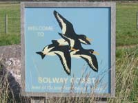
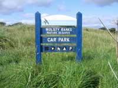
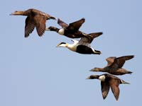
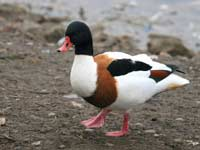
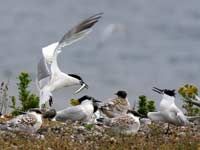
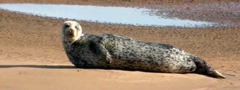
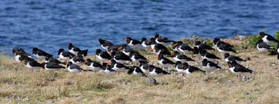

Solway Coast
Tranquil, restful and freedom to move. What better holiday destination than an unspoiled coastline designated as an Area of Outstanding Natural Beauty and miles of level open countryside reflecting centuries of culture and heritage stretching eastwards to the foot of the Caldbeck Fells and northwards to the regional capital of Carlisle and the historic landmark of Hadrians Wall.
Here, along the uncrowded Solway Coast and Plain, traditional Cumbrian hospitality awaits the visitor in family- run bed and breakfast, guest house, self catering, hotel, and caravan and camp-site accommodations at value for money prices.
The Solway Coast is officially recognised as the area between the town of Maryport and Rockcliffe Marsh on the Scottish Border. It's a land of spectacular sunsets which attracts artists and photographers from countrywide.
Dunes, saltmarsh and mudflats provide sanctuary and food to a wide variety of birds, insects, animals and rare plants. Spitzbergen Barnacle Geese winter here sharing the territory with the Oyster Catcher, Curlew, Pink Footed Geese, Plovers, Peregrine Falcon and, the Scaup, one of the country's rarest breeding ducks. Conveniently positioned Observation Points allow commanding views across the waters to the Scottish mainland and in between, the well integrated structure of the Coasts life is played out for all to see, enjoy, and marvel at.
Occasionally visible close to the shoreline, one can also spot seals and dolphins. For those who venture out at low tide, please be aware of the dangers of rapid incoming tides. Tide times can be checked locally.
Holiday accommodations are plentiful close to the coastline and can be found in and around the towns and villages of Maryport, Allonby, Silloth-on-Solway, Bowness-on-Solway, Mawbray, Beckfoot, Skinburness and Rockcliffe.
Solway Plain
Inland, the Solway Plain and its scattered communities form a storehouse of cultural and historical interests and nature conservation. The level paths, trails, bridleways, quiet country lanes and roads are ideal for the many walkers and cyclists who look for only moderate exertions in an uncluttered countryside. A popular walk is the “Smugglers Route”beginning at Maryport and ending at Mealsgate via Allonby and Hayton. Combine these with a wealth of respected golf courses, fresh water fishing, pony trekking, colourful town and village annual festivals, nature reserves and museums and you have something of interest for all ages.
Tasty home cooked menus of local produce are the speciality of many country inns, pubs and restaurants accompanied by a choice of the regions famous real ales or an item from a well stocked bar of wines and spirits.
Holiday accommodations are widely available in the larger communities of Wigton, Aspatria, Burgh by Sands, Bothel and Abbey Town and many of the villages and hamlets which together make this lovely region one of the most welcoming in the Lake District and Cumbria.
The colourful history of the Solway Plain is well worth exploring. Over the centuries it has been home to the Romans, Celts and Vikings.
A less well known indication of the Roman presence are two stones in Burgh Church on which there are carvings depicting an elephant and what has been suggested is a hippopotamus said to have been made by homesick Roman soldiers.
Scottish raiding parties were regular visitors during the 17th and 18th C. In 1626 one such group stole the church bells of St. Michaels Church, Bowness-on-Solway. Unfortunately, both for the raiders and St Michaels, the bells were lost overboard en-route by sea to Annan on the Scottish shore. The villagers of Bowness retaliated by crossing the border and stealing the bells from Darnock and Middlebrie. It is said that to this day, following the appointment of a new priest to the area, the incumbent requests the villagers of Bowness to the return the bells.
Staying close to Bowness-on-Solway, one mile away are the remains of a 19th Century harbour from where the wife to be of Woodrow Wilson emigrated.
Well documented evidence and artefacts of these times are on display in the Tullie Museum of Carlisle and the Senhouse and Maritime Museum in Maryport.
 |
 |
 |
 |
 |
 |
 |
Wildlife photography courtesy of Christine Redgate
Solway Activities and Information
WalkingHadrians Wall. See our Hadrians Wall Walk Page for advice and information. |
Cycling Reivers Cycle Route. St. Bees to Tynemouth on the east coast. |
Conservation areasWatchtree Nature Reserve. Situated on a former World War 2 airfield, this is one of the largest man-made reserves in Europe. Bird viewing hides, picnic areas, refreshments and toilet facilities. |
|
Fishing/angling Sea and fresh water opportunities. For locations and information go to any of the following: |
GolfSilloth Golf Club. Championship Links of 6641 yards. Stunning views. |
Religious Buildings Carlisle Cathedral. Founded 1122. |
|
Family Day Out Maryport Aquarium. Over 2000 fish on display, café, gift shop, mini golf course, boating pool and play park. Buy an all day ticket. |
Museums Tullie House. Carlisle. A large collection depicting the history and culture of the region. |
Principal towns and villagesMaryport, Silloth, Allonby, Skinburness, Bowness on Solway, Burgh by sands, Abbey Town, Wigton, Aspatria, Dalston, Anthorn |
|
Historical Monuments/Interest Hadrians Wall. |
Notables of the Area Melvyn Bragg. Wigton born broadcaster, writer and prolific novelist. A dedicated Cumbrian. |